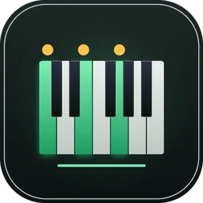
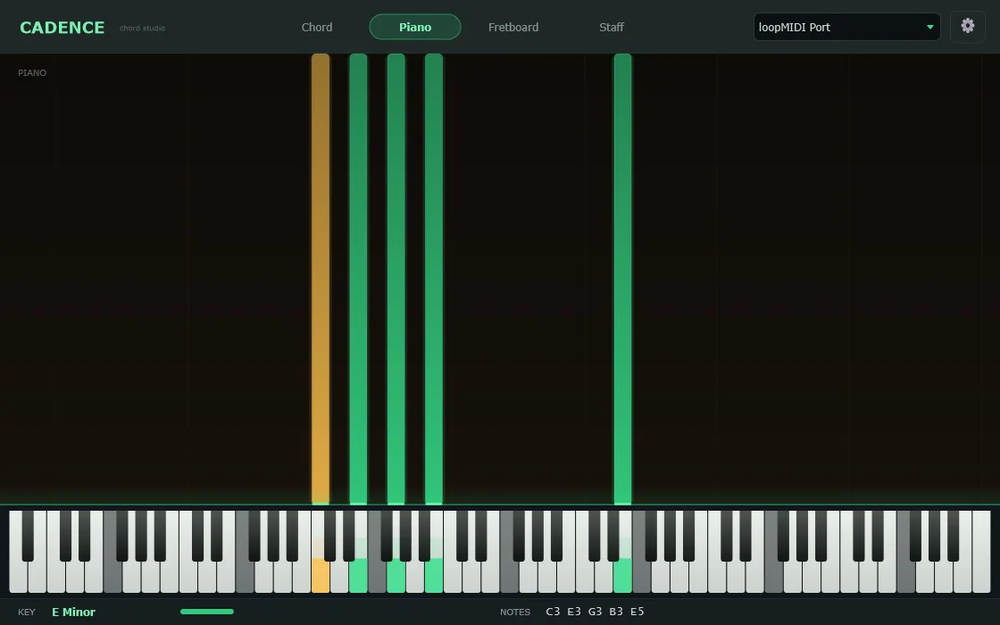
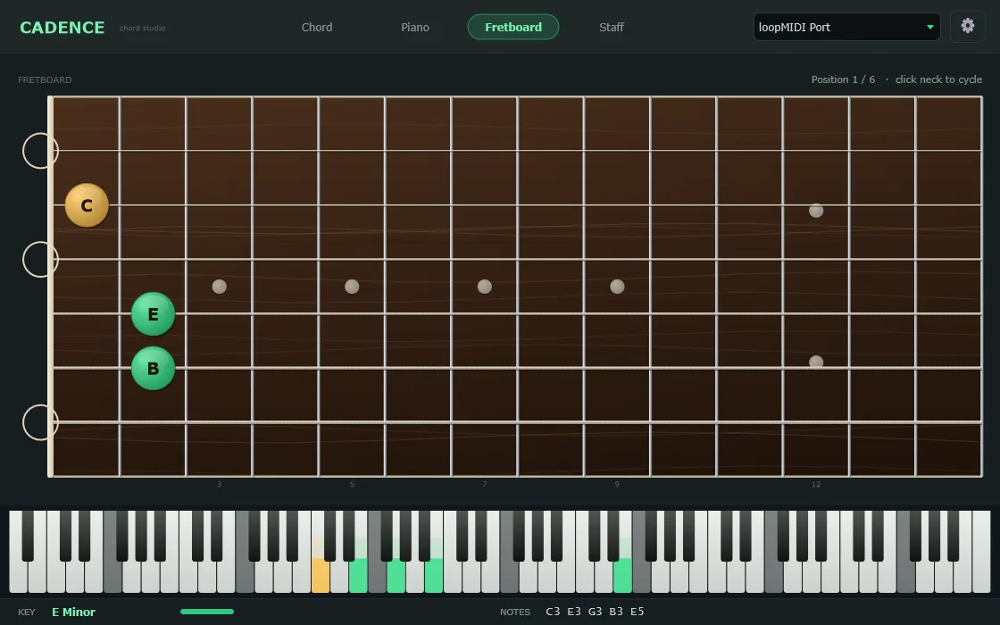

AuraLink Studio / Cadence

Stable v1.0 · Windows · MIDIPlug in a MIDI keyboard (or send MIDI from your DAW) and Cadence names the chord you're playing instantly, drawing it four ways at once: notes rising over an 88-key keyboard, the shape on a real guitar neck, a grand staff, and the song's key. A chord tool for keyboard and guitar players alike.

The slow part of learning chords isn't pressing the notes — it's knowing what you just played and where it sits. Cadence answers instantly, in realtime.
Change the colour of played notes, the root, and sustained notes.
Spell note and chord names with sharps (#) or flats (b) to fit the song.
Guitar neck in Standard, Drop D, DADGAD or Open G.
Auto-detect the key, or set it directly when you already know it.
Toggle note names and the alternate readings of the same chord.
Full A0–C8 range, and it follows the sustain pedal to show held notes.
Not just the chord name — Cadence shows how to play it on the neck, with the root highlighted so you know where to start.

The download is a single .zip with the app, the loopMIDI installer and a guide in three languages. Plug in a MIDI keyboard and pick it top-right to play; to use it with a DAW, follow the loopMIDI steps. Activate by clicking the settings button, copying the Machine ID and sending it to us for a key.